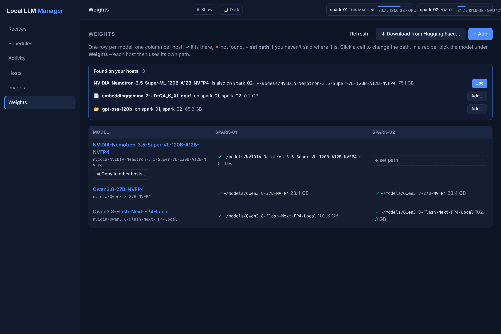

Weights¶
Model weights are big (often 20-200 GB) and must be on the machine that runs the model. The Weights tab keeps track of where each model is on each machine, finds weights that are already there, downloads new ones from Hugging Face and copies them from machine to machine over your own network.

One row per model, one column per host¶
The tab is a table: one row per model, one column per host.
| Cell | Meaning |
|---|---|
✓ ~/models/Qwen3.8-27B-NVFP4 23.4 GB |
The weights are at that path on that host. |
| ✗ | A path is set, but nothing is there (deleted, other disk not mounted, …). |
| + set path | You have not said yet where the model is on that host. |
Click a cell to change the path. The same model is often in a different folder on each machine
(~/models/Nemotron-VL on one Spark, /mnt/nvme/nemotron-vl on another) - that is fine, each host keeps
its own path. ~ is the home directory of the machine that runs the recipe.
One model is one row, whatever the case of its name, and one folder on a host belongs to one row:
registering ~/models/x again under another name is refused, because the tab would then offer two
downloads and two copies of the same weights. Several models that sit in one folder (a main model and its
drafter) get one row for that folder, and the recipe points model: inside it - a folder holding
everything (~/models) is such a row, and then it is the row for all of them.
Use weights in a recipe¶
In the recipe editor, pick the model under Weights and write {weights} where the path goes - picking
an entry adds the usual volume {weights}:/model:ro for you; in native recipes {weights} is the model
argument itself. In a YAML recipe the same is one line:
name: qwen3.8
framework: vllm
weights: Qwen3.8-27B-NVFP4 # the row's name in the Weights tab
port: 8101
GGUF in a folder (llama.cpp): llama.cpp loads one .gguf file, but a Hugging Face download is a folder.
When a llamacpp / llamacpp-native recipe's weights are a folder, the start picks the model file in it on
that host: vision projectors (mmproj-…) are skipped and of a split model (…-00001-of-00003.gguf) the
first part is used - llama.cpp loads the rest itself. If the folder holds several models (e.g. Q4_K_M and
Q8_0), the start is refused with their names: set Model to one, e.g. /model/Qwen3-8B-Q4_K_M.gguf
(Docker) or {weights}/Qwen3-8B-Q4_K_M.gguf (native).
When the recipe starts, {weights} becomes the path of the host it runs on. So moving a recipe to another
host, or copying it to many, needs no edits - as long as the model has a path there. The editor shows
right away whether the weights are on the selected host, and a start is refused with a clear message when
they are not.
Found on your hosts¶
You rarely type paths. When the tab opens (or on Refresh) every host looks for model folders (with a
config.json or weight files) and .gguf files in its DGXM_MODEL_DIR (default ~/models, up to three
levels deep) and the tab lists what it can add in the Found on your hosts box:
- "X is also on LocalPC" - a model you already registered was found on another host: Use sets that host's path.
- New folders /
.gguffiles nobody added yet: Add… creates a row. - Recipes that mount a folder directly (e.g.
~/models/x:/model:ro): adding them creates the row (or reuses one of the same name) and switches the recipes to{weights}.
The box is hidden when there is nothing to add. Several model folders per machine: list them in
DGXM_MODEL_DIR, separated by commas.
Download from Hugging Face¶
⬇ Download from Hugging Face… (top right, or ⬇ Download… on a model no host has yet) takes a repo
id such as nvidia/Qwen3.8-27B-NVFP4 and the hosts that should get it.
- By default only the first ticked host downloads; the others copy from it over your network, so the model comes over the internet once.
- Downloads go into the host's first
DGXM_MODEL_DIRand the row's path is set when they finish. - The host needs the
hfcommand (pip install -U huggingface_hub; setDGXM_HF_BINfor another binary). Gated models needHF_TOKENin that host's.env.
Copy weights to other hosts¶
A model that is on one machine already (downloaded, or copied there from your SSD) gets ⇉ Copy to other hosts… on its row. Tick the target hosts and the jobs panel shows GB, MB/s and the time left per machine.
flowchart LR
hf["☁️ Hugging Face"]
a["🖥️ Spark 1"]
b["🖥️ Spark 2"]
c["🖥️ Spark 3"]
d["🖥️ Spark 4"]
hf == "download once" ==> a
a -- "round 1" --> b
a -- "round 2" --> c
b -- "round 2" --> d- Machine to machine: the hub only arranges the copy; the data goes straight from one host to the other (a read-only share protected by a one-time ticket).
- Snowball: each host that has the weights serves one copy at a time and every finished host joins in, so 5 machines are done in 3 rounds.
- Safe and resumable: every file is checked with SHA-256, files a host already has are skipped, an interrupted copy continues where it stopped, and free disk space is checked first.
- Encrypted when the hosts reach each other over Tailscale or HTTPS - the dialog warns about plain HTTP addresses.
To copy from the hub's own machine, open the dashboard by its network name (not localhost) or set
DGXM_PUBLIC_URL.
Machines with little disk space¶
Not every machine can hold every model. The table shows each model's size per host, so you see at a
glance what fills a disk (GB, a million bytes - du shows the same folder in GiB; a shard that is only a
link to a file of the same folder counts once). Keep a model on one machine (or a NAS-mounted folder) and
⇉ copy it only to the machines that need it now; free disk space is checked before a copy starts. After
deleting a model folder on a host, Refresh turns its cell into ✗ and recipes that use it there
refuse to start with a clear message instead of failing halfway.
Typical flow¶
- Download from Hugging Face… onto one host - or let Found on your hosts pick up what is already on disk.
- ⇉ Copy to other hosts… to every machine that should run it.
- In the recipe pick it under Weights (
weights:in YAML) and ⇉ copy the recipe to the same hosts (Several machines). Every copy finds the model at its own path.